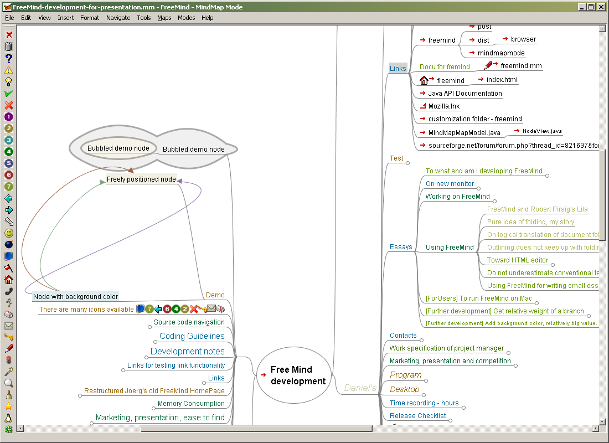

Freemind 问答速查：一款老牌开源导图工具还值不值得装
Freemind 是一款运行十多年的开源思维导图软件。这篇快问快答把它的定位、安装、核心用法、常见坑和同类对比一次性说清，帮你判断要不要把它放进自己的工具库。
整理一篇关于 Freemind 的快问快答。它是思维导图领域里资历最老的开源项目之一，跑了十几年还有人在更新。很多人第一次用导图就是 Freemind，后来转投 XMind 或幕布，还有一批人坚持留在这条线上。下面八个问题，覆盖从入门到踩坑的全路径。
Freemind 到底是什么？它和 XMind、幕布有什么本质区别？
Freemind 是一款用 Java 写的开源思维导图软件，它的官网上至今还挂着完整的历史版本归档和开发者讨论区。它从 2003 年开始活跃，核心定位始终没变：轻量、开放、不锁格式。整个程序就是一个 jar 包，解压即跑，数据格式是标准的 .mm 文件（MindMap 格式），几乎所有主流导图工具都能读。
和 XMind 比，Freemind 没有那么多花哨的模板和云同步，界面朴素到像个文本编辑器。但它的文件不加密、不绑定账号，换台电脑、换个系统、换个软件都能打开。和幕布这种在线大纲转导图的工具比，Freemind 是纯本地应用，不需要浏览器、不需要网络、不需要登录。
一句话概括：Freemind 是为那些想要「画一张导图、存成一个文件、永远不担心打不开」的人做的。

谁需要 Freemind？什么场景下它比别的工具好用？
四类用户对它最友好。第一类是程序员和技术文档作者——导图作为代码注释、架构草图、文档索引，需要的是结构化表达而非视觉冲击。第二类是知识库整理者，把文件夹、网址、笔记挂在节点上变成工作入口，这是 Freemind 链接系统的强项。第三类是低带宽或离线工作者，纯本地零网络依赖。第四类是格式敏感者，不希望几年后某个商业软件停服或涨价把自己的导图资产锁死。
反过来说，如果你需要云端协作、团队实时编辑、大量精美的演示模板，Freemind 就不是最佳选择——它从设计上就没往这个方向走。
怎么装？启动报错是常事吗？
Windows 用户最简单的路径是从官方下载拿到 zip 包，解压后直接双击 freemind.bat 运行。没有安装向导，不往系统里写任何东西，卸载就是删文件夹。这是它最吸引人的地方之一——绿色便携，U盘里塞一个走到哪用到哪。
启动报错确实是 Freemind 最常见的问题，而且几乎都和 Java 环境有关。它依赖 JRE（Java 运行时），如果电脑上装的是 JDK 而没有单独配 JRE，环境变量 JAVA_HOME 指错了位置，程序就会启动没反应，连个错误提示都不给。反过来，存盘弹不出文件对话框也是同一个根因——JDK 的图形组件库和 JRE 的不一样，文件选择框调不起来。
修法有两条：要么把 JAVA_HOME 环境变量从 JDK 改到 JRE 目录（推荐），要么编辑 freemind.bat 把里面的 java 命令改成完整的绝对路径，精确到 JRE 的 java.exe 文件。后者适合不想动系统环境变量的人，改完以后每次用这个 bat 启动就行。
核心操作有哪些？快捷键记哪几个就够了？
Freemind 的界面像棵树。根节点在中间，按 Tab 键给当前节点加子节点，按 Enter 键加同级节点——这两个键是高频操作，几乎所有导图工具都沿用这套逻辑。Delete 删节点，F2 重命名，Ctrl+A 全选这些是通行快捷键。
真正让 Freemind 有辨识度的是批量操作和分区作用域。字体字号有四个快捷键：Ctrl+L/M 调当前节点字号，Ctrl+Shift+L/M 调整条分支字号。前者强调单个要点，后者给整族分支定调，两套键配合作大图排版时效率很高。粗体斜体走通行的 Ctrl+B 和 Ctrl+I，不用额外记。
节点能挂链接？具体怎么用？
这是 Freemind 从「画图工具」变成「工作入口」的关键功能。默认快捷键 Ctrl+K 弹出输入框，直接敲网址；Ctrl+Shift+K 弹出文件浏览器选本地文件或文件夹。挂好之后，Ctrl+Enter 跟随链接，或者鼠标直接点链接标记。
有个细节很少有别的导图工具做得到：带链接又有子节点的节点，左侧点击打开链接，右侧点击折叠展开。两个动作在同一个节点上互不打架——你可以一张图里同时存下项目入口和项目的结构分支，不会点错。
典型用法三种：项目工作区（需求文档、设计稿、可执行文件全挂在对应任务节点下）、调研收藏夹（搜索结果挂节点标题写人话）、本地知识索引（文件夹挂节点，一个节点直达一个资料目录）。有一个已知边界：少数电脑上点击网页链接跳浏览器会没反应，改改用 Ctrl+Enter 或者更新 Java 通常能解。
美化导图有什么门道？节点样式和字号怎么配？
Freemind 内置两种节点形态：Fork 分叉式和 Bubble 气泡式。分叉式就是只有文字和连线，轻量通透，适合信息密度高的工作图；气泡式是圆角框包住文字，醒目突出，适合把关键节点标出来。两种形态可以整图混用——根节点默认是大泡泡，子节点保持分叉，视觉上既有重心又不拥堵。
云朵是另一种区域强调工具。气泡包的是单个节点，云朵包的是一片区域（一个节点加它的全部子孙），像用粉笔在图上圈出一块地盘。强调单个要点用气泡，强调一片主题区用云朵，两者不冲突。
字号方面，软件自动布局自带一套根大枝小的逻辑，不动也能看。关于字号和颜色的搭配原则，在freemind文档里有状态色约定表可以直接对照。手动调字号的核心思路是跨层级强调——比如把全图所有「行动项」节点不管在哪一层都调大一号，视觉检索立刻变快。分支键 Ctrl+Shift+L/M 适合先给每个主分支定调，整族一起缩放，图面节奏就出来了。
字号管重要性，颜色管状态，别让它们打架——用红橙绿灰标状态，用字号大小标重要度，两套编码分开不覆盖。

存盘弹不出对话框怎么办？图会不会丢？
症状很典型：新建导图、编辑节点一切正常，一到 Ctrl+S 或另存为就毫无反应，文件选择对话框根本弹不出来。别慌，图和数据都没坏，这是 Java 环境的问题，不是软件损坏。
原因和启动没反应同源：电脑里 JDK 和 JRE 混装了，JAVA_HOME 指到了 JDK，但 JDK 的图形组件库调不起文件选择框。修法还是那两条——改环境变量或改启动脚本里的 java 路径，指向正确的 JRE 就行。
如果你当下急需保住数据，有两条应急路：菜单里导出 HTML 不依赖文件对话框，可以先试；或者直接去自动保存目录找，Freemind 默认一分钟存一次备份，就在用户主目录下，文件名带时间戳，复制出来就是完整的 .mm 文件。
Freemind 和 XMind、幕布比起来，值不值得长期用？
如果你的核心需求是不被任何平台绑定，Freemind 目前仍然是最稳的选择——它不收费、不登录、不开会员、不加密文件、不做广告、不收集数据。导出格式支持 HTML、PDF、PNG、SVG、OPML、Freeplane 格式，几乎没有转不出去的场景。
但它的短板也很明显：没有云同步，没有手机端，没有实时协作，界面的审美还停留在 2005 年的 Swing 风格。对于需要团队协同、跨设备同步、精致演示的用户来说，这些短板已经是硬伤，不是小修小补能解决的。
Freemind 更像一把瑞士军刀——功能不花哨，但该有的都有，而且永远不会生锈。它适合那些已经形成自己的工作流、不需要被软件牵着走的人。
最后一句：如果你对「我的导图资产永远属于我」这件事有执念，装它；如果你的导图需要在团队里流转、在手机上查看、在云端协作，它可能不是你要找的那个。顺带一提，这款软件的资料我同步维护在GitHub、Gitee和GitCode，国内访问走 Gitee 最稳。